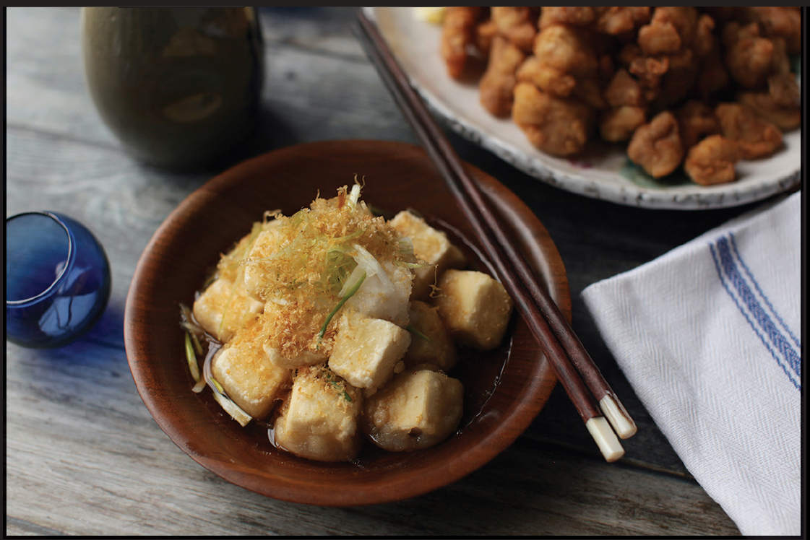

AGEDASHI TOFU (FRIED TOFU WITH SOY-DASHI)
|
Yield Serves 4 |
Active Time 30 minutes Total Time 30 minutes |
Homemade or store-bought tsuyu can be used in place of the dashi, soy, and mirin mixture in step one. Dilute tsuyu at a ratio of 1½ cups (360 ml) water to ½ cup (120 ml) tsuyu. For best flavor, use homemade dashi (here). Alternatively, you can use powdered Hondashi, available at Asian markets or occasionally in the international aisle of a well-stocked supermarket. The used oil can be strained and saved for another use.
INGREDIENTS
For the Soy-Dashi (see Notes):
1½ cups (360 ml) dashi (see Notes)
3 tablespoons (45 ml) mirin
2 tablespoons (30 ml) light soy sauce or shoyu
For the Tofu:
⅓ cup (45 g) potato starch or cornstarch (see Notes)
⅓ cup (45 g) all-purpose flour
One 12.3-ounce/340 g) package firm or extra-firm silken tofu, cut into ¾-inch cubes
1 quart (1 l) peanut, rice bran, or other neutral oil
2 scallions, finely sliced, slices stored in ice water until ready to use (optional)
Large pinch of katsuobushi (optional)
2 ounces (60 g) grated daikon radish (optional)

In the West, we tend to be obsessed with crispy, crunchy foods. If you work hard to get something crispy, it had better stay crispy until it gets in your mouth. In Japan, on the other hand, fried foods are frequently intentionally allowed to soften. Crispy fried tofu is marinated in soy sauce and mirin until soft, then stuffed with rice for inarizushi. Crisp tempura shrimp served saturated in broth with noodles is a classic udon or soba shop menu item.
The idea is that a puffy fried coating, with its open pores and light texture, is like a sponge: it’s a very effective medium for absorbing and holding on to broth and sauce. With agedashi tofu, for instance, silken tofu is dusted in starch, deep-fried until crisp, then served in a shallow pool of dashi seasoned with soy sauce and mirin (you can use homemade or store-bought concentrated tsuyu to make this broth; see the recipe on here). The coating softens and absorbs the broth, which effectively seasons every bite of tofu.
This is one of my favorite dishes and a favorite of my daughter as well (who has been eating it since she was around 6 months old).
DIRECTIONS
1 For the Soy-Dashi: Combine the dashi, mirin, and soy sauce in a small saucepan and heat over medium-high heat until barely simmering. Reduce the heat, cover, and keep warm until ready to use.
2 For the Tofu: Combine the starch and flour in a large bowl and toss the tofu in the flour mixture until well coated. Place in a fine-mesh strainer held over the sink and shake gently to remove excess starch and flour.
3 In a wok, heat the oil to 375°F (190°C). Add the tofu and cook, agitating it to separate the pieces and adjusting the heat to maintain an oil temperature of 325° to 350°F (160° to 175°C), until the tofu is golden brown and crisp, about 2 minutes. Remove the tofu with a spider, drain, and transfer to serving bowls. Pour the hot dashi mixture over the tofu, garnish with scallions, katsuobushi, and grated daikon (if using), and serve.